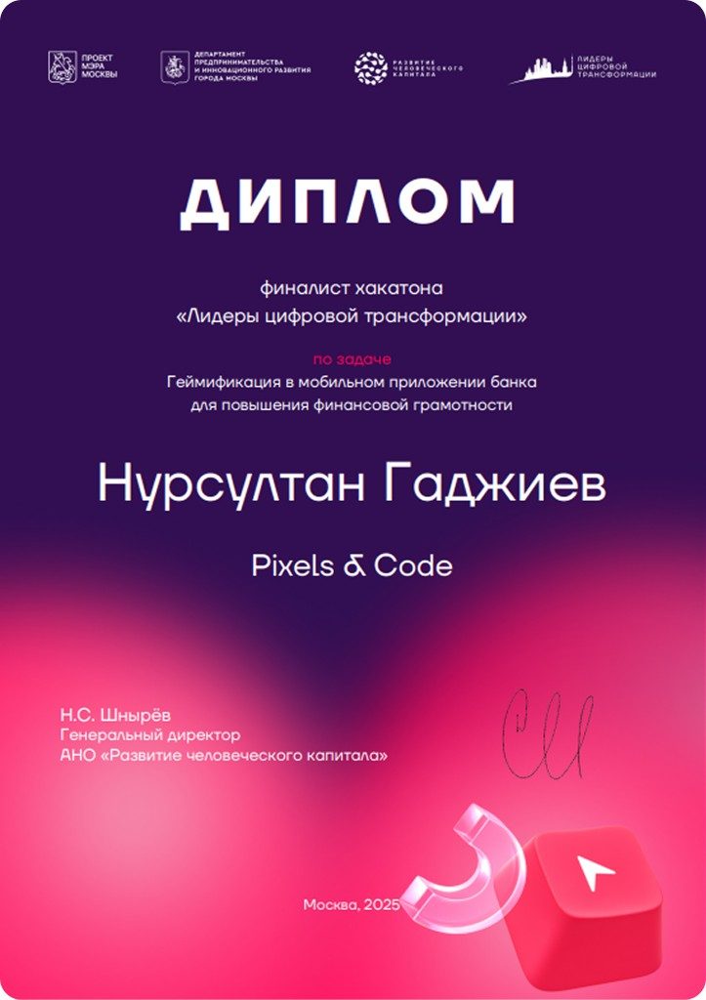

Хакатон ЛЦТ
Задача
- — Разработать концепцию геймификации для мобильного приложения «Газпромбанк» в рамках хакатона ЛЦТ
- — Создать с нуля новый, эмоционально вовлекающий раздел для молодёжной аудитории, обучающий финансовой грамотности
- — Спроектировать интуитивно понятный и визуально привлекательный интерфейс для ежедневного взаимодействия (Daily Hook)
- — Повысить лояльность пользователей к бренду через игровые механики и систему вознаграждений
Что я сделал
- — Совместно с командой разработал концепцию «Газеты» — ежедневного раздела с загадками, играми и призами от партнёров
- — Спроектировал пользовательский флоу (User Flow) от момента онбординга до получения реального банковского бонуса
- — Разработал кастомный дизайн элементов ввода: уникальную визуальную клавиатуру и механику открытия букв
- — Визуализировал игровые механики (мини-игры, «барабан удачи»), интегрировав их в экосистему банковского приложения
- — Создал систему баннеров и карточек для спецпредложений партнёров (например, «Вкусно — и точка»), соблюдая баланс между игрой и маркетингом
- — Технологический прорыв: совместно с командой использовал AI-инструменты для автоматической вёрстки готового прототипа в работающий код — жюри оценили реальный продукт
Результат
- — Признание экспертов: проект вошёл в топ-10 лучших решений среди 50 команд на хакатоне ЛЦТ 2025
- — Эмоциональная вовлечённость: за счёт яркого «живого» дизайна и игровых механик («открой букву», «крути барабан») удалось создать сценарий, мотивирующий пользователя заходить в приложение каждый день
- — Высокая технологичность: сдача не просто макетов, а рабочей вёрстки через AI показала жюри готовность решения к быстрому пилотированию
- — Бизнес-ценность: разработана механика конвертации игровых достижений в реальные банковские бонусы и предложения партнёров, что напрямую влияет на транзакционную активность

